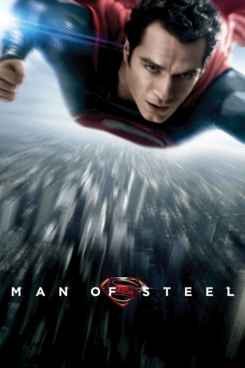

 
 IMDB-Wertung: 7.1 / 10
IMDB-Wertung: 7.1 / 10  Metascore:
Metascore: 
Kal-El vom Planeten Krypton wird von seinem Vater Jor-El in einer Rettungskapsel auf die ferne Erde gesendet, um dem drohenden Untergang des Planeten zu entgehen. Dort wird er im ländlichen Kansas von Martha und Jonathan Kent adoptiert. Er wächst unter dem Namen Clark Kent auf und übernimmt später einen Job als Journalist beim Daily Planet. Nur er und seine Adoptiveltern wissen, dass sich hinter dem unscheinbaren jungen Mann ein außerirdisches Wesen mit übernatürlichen Fähigkeiten verbirgt: Superman. Doch mit seinen überwältigenden Fähigkeiten kommt auch die Verantwortung unfassbare Entscheidungen treffen zu müssen. Als der brutale General Zod die Erde angreift, muss Superman seinem Schicksal folgen und die Menschheit beschützen.
Jahr: 2013
Dauer: 143 Minuten
FSK: 12
Land: USA Studio: Warner Bros.Tonspuren: DD5.1 - ,
Untertitel:
Auflösung: 1080p (1920x800) Größe: 10342 MB
Genre: Action, Abenteuer, Fantasy, Sci-Fi
Regisseur: Zack Snyder
Drehbuch: David S. Goyer, David S. Goyer, Christopher Nolan, Jerry Siegel, Joe Shuster
Soundtrack: Hans Zimmer
Darsteller:
 Richard Schiff als Dr. Emil Hamilton
Richard Schiff als Dr. Emil Hamilton Laurence Fishburne als Perry White
Laurence Fishburne als Perry White Elizabeth Thai als Northcom Threat Analyst
Elizabeth Thai als Northcom Threat AnalystDatei: X:\Comic-Filme\Superman\Man of Steel (2013, FSK12, 1920x800) 3D.mkv seit 15.05.2015
Festplatte: Comicverfilmungen+MusikCD
 Es gibt insgesamt 10 Filme in der Gruppe 'Comic-Filme\Superman'
Es gibt insgesamt 10 Filme in der Gruppe 'Comic-Filme\Superman'